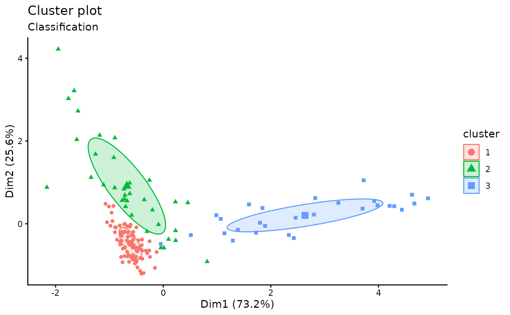

Plots the classification, the uncertainty and the BIC values returned by the Mclust() function.
Usage
fviz_mclust(
object,
what = c("classification", "uncertainty", "BIC"),
ellipse.type = "norm",
ellipse.level = 0.4,
ggtheme = theme_classic(),
...
)
fviz_mclust_bic(
object,
model.names = NULL,
shape = 19,
color = "model",
palette = NULL,
legend = NULL,
main = "Model selection",
xlab = "Number of components",
ylab = "BIC",
...
)Arguments
- object
an object of class Mclust
- what
choose from one of the following three options: "classification" (default), "uncertainty" and "BIC".
- ellipse.type
Character specifying frame type. Possible values are 'convex', 'confidence' or types supported by
stat_ellipseincluding one of c("t", "norm", "euclid").- ellipse.level
the size of the concentration ellipse in normal probability. Passed for
ggplot2::stat_ellipse's level. Ignored in 'convex'. Default value is 0.95.- ggtheme
function, ggplot2 theme name. Default value is theme_pubr(). Allowed values include ggplot2 official themes: theme_gray(), theme_bw(), theme_minimal(), theme_classic(), theme_void(), ....
- ...
other arguments to be passed to the functions fviz_cluster and ggpar.
- model.names
one or more model names corresponding to models fit in object. The default is to plot the BIC for all of the models fit.
- shape
point shape. To change point shape by model names use shape = "model".
- color
point and line color.
- palette
the color palette to be used for coloring or filling by groups. Allowed values include "grey" for grey color palettes; brewer palettes e.g. "RdBu", "Blues", ...; or custom color palette e.g. c("blue", "red"); and scientific journal palettes from ggsci R package, e.g.: "npg", "aaas", "lancet", "jco", "ucscgb", "uchicago", "simpsons" and "rickandmorty". Can be also a numeric vector of length(groups); in this case a basic color palette is created using the function palette.
- legend
character specifying legend position. Allowed values are one of c("top", "bottom", "left", "right", "none"). To remove the legend use legend = "none". Legend position can be also specified using a numeric vector c(x, y); see details section.
- main
plot main title.
- xlab
character vector specifying x axis labels. Use xlab = FALSE to hide xlab.
- ylab
character vector specifying y axis labels. Use ylab = FALSE to hide ylab.
Functions
fviz_mclust(): Plots classification and uncertainty.fviz_mclust_bic(): Plots the BIC values.
Examples
if(require("mclust")){
# Compute model-based-clustering
require("mclust")
data("diabetes")
mc <- Mclust(diabetes[, -1])
# Visaulize BIC values
fviz_mclust_bic(mc)
# Visualize classification
fviz_mclust(mc, "classification", geom = "point")
}
#> Loading required package: mclust
#> Package 'mclust' version 6.1.2
#> Type 'citation("mclust")' for citing this R package in publications.
